knitr::opts_chunk$set(comment = NA)
library(broom)
library(gmodels)
library(MASS)
library(nnet)
library(rms)
library(tidyverse)
theme_set(theme_bw())27 Modeling an Ordinal Categorical Outcome
27.1 R Setup Used Here
27.1.1 Data Load
smart_oh <- readRDS("data/smart_ohio.Rds")27.2 A subset of the Ohio SMART data
Let’s consider the following data, which uses part of the smart_oh data we built in Chapter 6. The outcome we’ll study now is genhealth, which has five ordered categories. I’ll include the subset of all observations in smart_oh with complete data on these 7 variables.
| Variable | Description |
|---|---|
SEQNO |
Subject identification code |
genhealth |
Five categories (1 = Excellent, 2 = Very Good, 3 = Good, 4 = Fair, 5 = Poor) on general health |
physhealth |
Now thinking about your physical health, which includes physical illness and injury, for how many days during the past 30 days was your physical health not good? |
veg_day |
mean number of vegetable servings consumed per day |
costprob |
1 indicates Yes to “Was there a time in the past 12 months when you needed to see a doctor but could not because of cost?”, and 0 otherwise. |
incomegroup |
8 income groups from < 10,000 to 75,000 or more |
bmi |
body-mass index |
To make my life easier later, I’m going to drop any subjects with missing data on these variables. I’m also going to drop the subjects who have no missing data, but have a listed bmi above 60.
sm1 <- smart_oh |>
select(SEQNO, genhealth, physhealth, costprob, veg_day,
incomegroup, bmi) |>
filter(bmi <= 60) |>
drop_na()In total, we have 5394 subjects in the sm1 sample.
27.2.1 Several Ways of Storing Multi-Categorical data
We will store the information in our outcome, genhealth in both a numeric form (gen_n) and an ordered factor (gen_h) with some abbreviated labels) because we’ll have some use for each approach in this material.
sm1 <- sm1 |>
mutate(genh = fct_recode(genhealth,
"1-E" = "1_Excellent",
"2_VG" = "2_VeryGood",
"3_G" = "3_Good",
"4_F" = "4_Fair",
"5_P" = "5_Poor"),
genh = factor(genh, ordered = TRUE),
gen_n = as.numeric(genhealth))
sm1 |> count(genh, gen_n, genhealth)# A tibble: 5 × 4
genh gen_n genhealth n
<ord> <dbl> <fct> <int>
1 1-E 1 1_Excellent 822
2 2_VG 2 2_VeryGood 1805
3 3_G 3 3_Good 1667
4 4_F 4 4_Fair 801
5 5_P 5 5_Poor 29927.3 Building Cross-Tabulations
Is income group associated with general health?
27.3.1 Using base table functions
addmargins(table(sm1$incomegroup, sm1$genh))
1-E 2_VG 3_G 4_F 5_P Sum
0-9K 14 45 60 74 40 233
10-14K 12 41 66 93 46 258
15-19K 40 76 119 96 61 392
20-24K 51 129 175 100 50 505
25-34K 51 172 215 123 36 597
35-49K 97 270 303 118 24 812
50-74K 128 337 265 94 16 840
75K+ 429 735 464 103 26 1757
Sum 822 1805 1667 801 299 5394More people answer Very Good and Good than choose the other categories. It might be easier to look at percentages here.
27.3.1.1 Adding percentages within each row
Here are the percentages giving each genhealth response within each income group.
addmargins(
round(100*prop.table(
table(sm1$incomegroup, sm1$genh)
,1)
,1)
)
1-E 2_VG 3_G 4_F 5_P Sum
0-9K 6.0 19.3 25.8 31.8 17.2 100.1
10-14K 4.7 15.9 25.6 36.0 17.8 100.0
15-19K 10.2 19.4 30.4 24.5 15.6 100.1
20-24K 10.1 25.5 34.7 19.8 9.9 100.0
25-34K 8.5 28.8 36.0 20.6 6.0 99.9
35-49K 11.9 33.3 37.3 14.5 3.0 100.0
50-74K 15.2 40.1 31.5 11.2 1.9 99.9
75K+ 24.4 41.8 26.4 5.9 1.5 100.0
Sum 91.0 224.1 247.7 164.3 72.9 800.0So, for example, 11.3% of the genhealth responses in subjects with incomes between 25 and 34 thousand dollars were Excellent.
27.3.1.2 Adding percentages within each column
Here are the percentages in each incomegroup within each genhealth response.
addmargins(
round(100*prop.table(
table(sm1$incomegroup, sm1$genh)
,2)
,1)
)
1-E 2_VG 3_G 4_F 5_P Sum
0-9K 1.7 2.5 3.6 9.2 13.4 30.4
10-14K 1.5 2.3 4.0 11.6 15.4 34.8
15-19K 4.9 4.2 7.1 12.0 20.4 48.6
20-24K 6.2 7.1 10.5 12.5 16.7 53.0
25-34K 6.2 9.5 12.9 15.4 12.0 56.0
35-49K 11.8 15.0 18.2 14.7 8.0 67.7
50-74K 15.6 18.7 15.9 11.7 5.4 67.3
75K+ 52.2 40.7 27.8 12.9 8.7 142.3
Sum 100.1 100.0 100.0 100.0 100.0 500.1From this table, we see that 7.4% of the Excellent genhealth responses were given by people with incomes between 25 and 34 thousand dollars.
27.3.2 Using xtabs
The xtabs function provides a formula method for obtaining cross-tabulations.
xtabs(~ incomegroup + genh, data = sm1) genh
incomegroup 1-E 2_VG 3_G 4_F 5_P
0-9K 14 45 60 74 40
10-14K 12 41 66 93 46
15-19K 40 76 119 96 61
20-24K 51 129 175 100 50
25-34K 51 172 215 123 36
35-49K 97 270 303 118 24
50-74K 128 337 265 94 16
75K+ 429 735 464 103 2627.3.3 Storing a table in a tibble
We can store the elements of a cross-tabulation in a tibble, like this:
(sm1.tableA <- sm1 |> count(incomegroup, genh))# A tibble: 40 × 3
incomegroup genh n
<fct> <ord> <int>
1 0-9K 1-E 14
2 0-9K 2_VG 45
3 0-9K 3_G 60
4 0-9K 4_F 74
5 0-9K 5_P 40
6 10-14K 1-E 12
7 10-14K 2_VG 41
8 10-14K 3_G 66
9 10-14K 4_F 93
10 10-14K 5_P 46
# ℹ 30 more rowsFrom such a tibble, we can visualize the data in many ways, but we can also return to xtabs and include the frequencies (n) in that setup.
xtabs(n ~ incomegroup + genh, data = sm1.tableA) genh
incomegroup 1-E 2_VG 3_G 4_F 5_P
0-9K 14 45 60 74 40
10-14K 12 41 66 93 46
15-19K 40 76 119 96 61
20-24K 51 129 175 100 50
25-34K 51 172 215 123 36
35-49K 97 270 303 118 24
50-74K 128 337 265 94 16
75K+ 429 735 464 103 26And, we can get the \(\chi^2\) test of independence, with:
summary(xtabs(n ~ incomegroup + genh, data = sm1.tableA))Call: xtabs(formula = n ~ incomegroup + genh, data = sm1.tableA)
Number of cases in table: 5394
Number of factors: 2
Test for independence of all factors:
Chisq = 894.2, df = 28, p-value = 3.216e-17027.3.4 Using CrossTable from the gmodels package
The CrossTable function from the gmodels package produces a cross-tabulation with various counts and proportions like people often generate with SPSS and SAS.
CrossTable(sm1$incomegroup, sm1$genh, chisq = T)
Cell Contents
|-------------------------|
| N |
| Chi-square contribution |
| N / Row Total |
| N / Col Total |
| N / Table Total |
|-------------------------|
Total Observations in Table: 5394
| sm1$genh
sm1$incomegroup | 1-E | 2_VG | 3_G | 4_F | 5_P | Row Total |
----------------|-----------|-----------|-----------|-----------|-----------|-----------|
0-9K | 14 | 45 | 60 | 74 | 40 | 233 |
| 13.027 | 13.941 | 2.002 | 44.865 | 56.796 | |
| 0.060 | 0.193 | 0.258 | 0.318 | 0.172 | 0.043 |
| 0.017 | 0.025 | 0.036 | 0.092 | 0.134 | |
| 0.003 | 0.008 | 0.011 | 0.014 | 0.007 | |
----------------|-----------|-----------|-----------|-----------|-----------|-----------|
10-14K | 12 | 41 | 66 | 93 | 46 | 258 |
| 18.980 | 23.806 | 2.366 | 78.061 | 70.259 | |
| 0.047 | 0.159 | 0.256 | 0.360 | 0.178 | 0.048 |
| 0.015 | 0.023 | 0.040 | 0.116 | 0.154 | |
| 0.002 | 0.008 | 0.012 | 0.017 | 0.009 | |
----------------|-----------|-----------|-----------|-----------|-----------|-----------|
15-19K | 40 | 76 | 119 | 96 | 61 | 392 |
| 6.521 | 23.208 | 0.038 | 24.531 | 70.973 | |
| 0.102 | 0.194 | 0.304 | 0.245 | 0.156 | 0.073 |
| 0.049 | 0.042 | 0.071 | 0.120 | 0.204 | |
| 0.007 | 0.014 | 0.022 | 0.018 | 0.011 | |
----------------|-----------|-----------|-----------|-----------|-----------|-----------|
20-24K | 51 | 129 | 175 | 100 | 50 | 505 |
| 8.756 | 9.463 | 2.296 | 8.340 | 17.301 | |
| 0.101 | 0.255 | 0.347 | 0.198 | 0.099 | 0.094 |
| 0.062 | 0.071 | 0.105 | 0.125 | 0.167 | |
| 0.009 | 0.024 | 0.032 | 0.019 | 0.009 | |
----------------|-----------|-----------|-----------|-----------|-----------|-----------|
25-34K | 51 | 172 | 215 | 123 | 36 | 597 |
| 17.567 | 3.862 | 5.042 | 13.307 | 0.255 | |
| 0.085 | 0.288 | 0.360 | 0.206 | 0.060 | 0.111 |
| 0.062 | 0.095 | 0.129 | 0.154 | 0.120 | |
| 0.009 | 0.032 | 0.040 | 0.023 | 0.007 | |
----------------|-----------|-----------|-----------|-----------|-----------|-----------|
35-49K | 97 | 270 | 303 | 118 | 24 | 812 |
| 5.779 | 0.011 | 10.798 | 0.055 | 9.808 | |
| 0.119 | 0.333 | 0.373 | 0.145 | 0.030 | 0.151 |
| 0.118 | 0.150 | 0.182 | 0.147 | 0.080 | |
| 0.018 | 0.050 | 0.056 | 0.022 | 0.004 | |
----------------|-----------|-----------|-----------|-----------|-----------|-----------|
50-74K | 128 | 337 | 265 | 94 | 16 | 840 |
| 0.000 | 11.121 | 0.112 | 7.575 | 20.061 | |
| 0.152 | 0.401 | 0.315 | 0.112 | 0.019 | 0.156 |
| 0.156 | 0.187 | 0.159 | 0.117 | 0.054 | |
| 0.024 | 0.062 | 0.049 | 0.017 | 0.003 | |
----------------|-----------|-----------|-----------|-----------|-----------|-----------|
75K+ | 429 | 735 | 464 | 103 | 26 | 1757 |
| 97.108 | 36.780 | 11.492 | 95.573 | 52.335 | |
| 0.244 | 0.418 | 0.264 | 0.059 | 0.015 | 0.326 |
| 0.522 | 0.407 | 0.278 | 0.129 | 0.087 | |
| 0.080 | 0.136 | 0.086 | 0.019 | 0.005 | |
----------------|-----------|-----------|-----------|-----------|-----------|-----------|
Column Total | 822 | 1805 | 1667 | 801 | 299 | 5394 |
| 0.152 | 0.335 | 0.309 | 0.148 | 0.055 | |
----------------|-----------|-----------|-----------|-----------|-----------|-----------|
Statistics for All Table Factors
Pearson's Chi-squared test
------------------------------------------------------------
Chi^2 = 894.1685 d.f. = 28 p = 3.216132e-170
27.4 Graphing Categorical Data
27.4.1 A Bar Chart for a Single Variable
ggplot(sm1, aes(x = genhealth, fill = genhealth)) +
geom_bar() +
scale_fill_brewer(palette = "Set1") +
guides(fill = "none")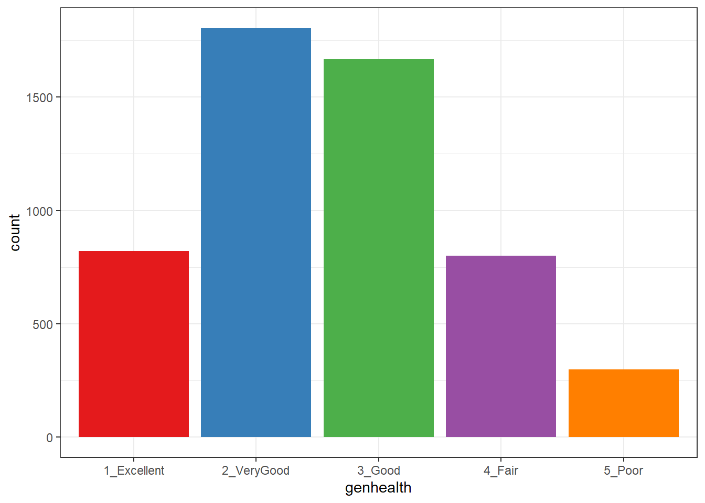
or, you might prefer to plot percentages, perhaps like this:
ggplot(sm1, aes(x = genhealth, fill = genhealth)) +
geom_bar(aes(y = (..count..)/sum(..count..))) +
geom_text(aes(y = (..count..)/sum(..count..),
label = scales::percent((..count..) /
sum(..count..))),
stat = "count", vjust = 1,
color = "white", size = 5) +
scale_y_continuous(labels = scales::percent) +
scale_fill_brewer(palette = "Dark2") +
guides(fill = "none") +
labs(y = "Percentage")Warning: The dot-dot notation (`..count..`) was deprecated in ggplot2 3.4.0.
ℹ Please use `after_stat(count)` instead.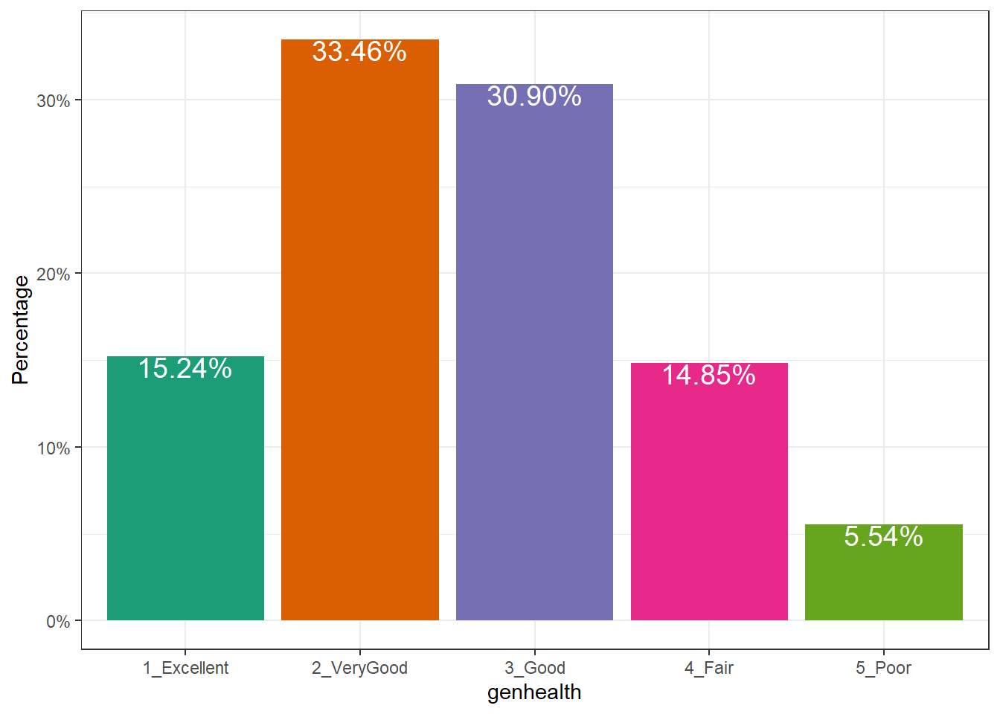
Use bar charts, rather than pie charts.
27.4.2 A Counts Chart for a 2-Way Cross-Tabulation
ggplot(sm1, aes(x = genhealth, y = incomegroup)) +
geom_count() 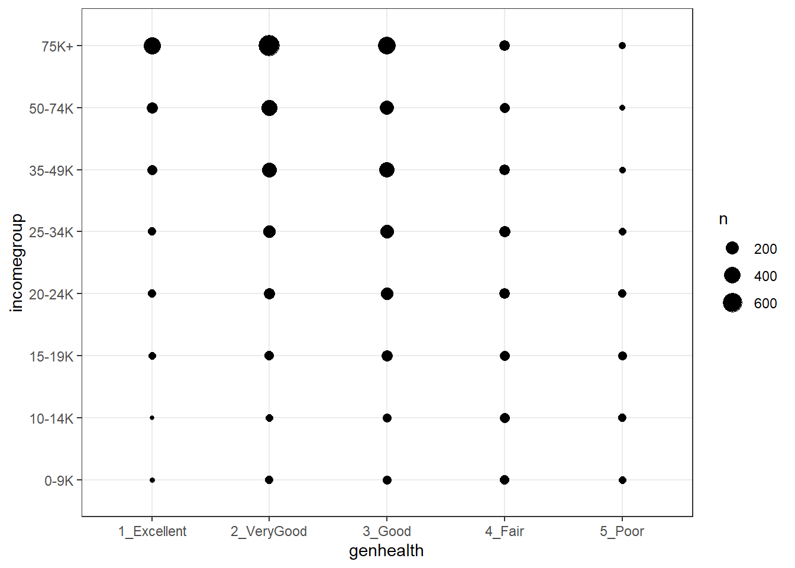
27.5 Building a Model for genh using veg_day
To begin, we’ll predict each subject’s genh response using just one predictor, veg_day.
27.5.1 A little EDA
Let’s start with a quick table of summary statistics.
sm1 |> group_by(genh) |>
summarize(n(), mean(veg_day), sd(veg_day), median(veg_day))# A tibble: 5 × 5
genh `n()` `mean(veg_day)` `sd(veg_day)` `median(veg_day)`
<ord> <int> <dbl> <dbl> <dbl>
1 1-E 822 2.16 1.46 1.87
2 2_VG 1805 1.99 1.13 1.78
3 3_G 1667 1.86 1.11 1.71
4 4_F 801 1.74 1.18 1.57
5 5_P 299 1.71 1.06 1.57To actually see what’s going on, we might build a comparison boxplot, or violin plot. The plot below shows both, together, with the violin plot helping to indicate the skewed nature of the veg_day data and the boxplot indicating quartiles and outlying values within each genhealth category.
ggplot(sm1, aes(x = genhealth, y = veg_day)) +
geom_violin(aes(fill = genhealth), trim = TRUE) +
geom_boxplot(width = 0.2) +
guides(fill = "none", color = "none") +
theme_bw()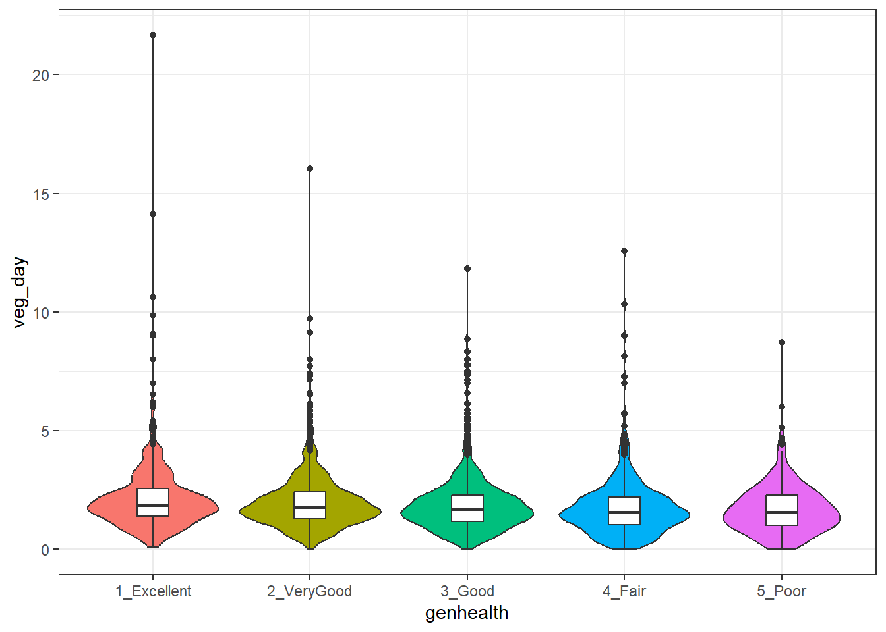
27.5.2 Describing the Proportional-Odds Cumulative Logit Model
To fit the ordinal logistic regression model (specifically, a proportional-odds cumulative-logit model) in this situation, we’ll use the polr function in the MASS package.
- Our outcome is
genh, which has five ordered levels, with1-Ebest and5-Pworst. - Our model will include one quantitative predictor,
veg_day.
The model will have four logit equations:
- one estimating the log odds that
genhwill be less than or equal to 1 (i.e.genhealth= 1_Excellent,) - one estimating the log odds that
genh\(\leq\) 2 (i.e.genhealth= 1_Excellent or 2_VeryGood,) - another estimating the log odds that
genh\(\leq\) 3 (i.e.genhealth= 1_Excellent, 2_VeryGood or 3_Good,) and, finally, - one estimating the log odds that
genh\(\leq\) 4 (i.e.genhealth= 1_Excellent, 2_VeryGood, 3_Good or 4_Fair)
That’s all we need to estimate the five categories, since Pr(genh \(\leq\) 5) = 1, because (5_Poor) is the maximum category for genhealth.
We’ll have a total of five free parameters when we add in the slope for veg_day, and I’ll label these parameters as \(\zeta_1, \zeta_2, \zeta_3, \zeta_4\) and \(\beta_1\). The \(\zeta\)s are read as “zeta” values, and the people who built the polr function use that term.
The four logistic equations that will be fit differ only by their intercepts. They are:
\[ logit[Pr(genh \leq 1)] = log \frac{Pr(genh \leq 1}{Pr(genh > 1)} = \zeta_1 - \beta_1 veg_day \]
which describes the log odds of a genh value of 1 (Excellent) as compared to a genh value greater than 1 (which includes Very Good, Good, Fair and Poor).
The second logit model is:
\[ logit[Pr(genh \leq 2)] = log \frac{Pr(genh \leq 2}{Pr(genh > 2)} = \zeta_2 - \beta_1 veg_day \]
which describes the log odds of a genh value of 1 (Excellent) or 2 (Very Good) as compared to a genh value greater than 2 (which includes Good, Fair and Poor).
Next we have:
\[ logit[Pr(genh \leq 3)] = log \frac{Pr(genh \leq 3}{Pr(genh > 3)} = \zeta_3 - \beta_1 veg_day \]
which describes the log odds of a genh value of 1 (Excellent) or 2 (Very Good) or 3 (Good) as compared to a genh value greater than 3 (which includes Fair and Poor).
Finally, we have
\[ logit[Pr(genh \leq 4)] = log \frac{Pr(genh \leq 4}{Pr(genh > 4)} = \zeta_4 - \beta_1 veg_day \]
which describes the log odds of a genh value of 4 or less, which includes Excellent, Very Good, Good and Fair as compared to a genh value greater than 4 (which is Poor).
Again, the intercept term is the only piece that varies across the four equations.
In this case, a positive coefficient \(\beta_1\) for veg_day means that increasing the value of veg_day would increase the genh category (describing a worse level of general health, since higher values of genh are associated with worse health.)
27.5.3 Fitting a Proportional Odds Logistic Regression with polr
Our model m1 will use proportional odds logistic regression (sometimes called an ordered logit model) to predict genh on the basis of veg_day. The polr function from the MASS package will be our main tool. Note that we include Hess = TRUE to retain what is called the Hessian matrix, which lets R calculate standard errors more effectively in summary and other follow-up descriptions of the model.
m1 <- polr(genh ~ veg_day,
data = sm1, Hess = TRUE)
summary(m1)Call:
polr(formula = genh ~ veg_day, data = sm1, Hess = TRUE)
Coefficients:
Value Std. Error t value
veg_day -0.1847 0.02178 -8.48
Intercepts:
Value Std. Error t value
1-E|2_VG -2.0866 0.0584 -35.7590
2_VG|3_G -0.4065 0.0498 -8.1621
3_G|4_F 1.0202 0.0521 19.5771
4_F|5_P 2.5002 0.0710 35.2163
Residual Deviance: 15669.85
AIC: 15679.85 confint(m1)Waiting for profiling to be done... 2.5 % 97.5 %
-0.2277073 -0.1423088 27.6 Interpreting Model m1
27.6.1 Looking at Predictions
Consider two individuals:
- Harry, who eats an average of 2.0 servings of vegetables per day, so Harry’s
veg_day= 2, and - Sally, who eats an average of 1.0 serving of vegetables per day, so Sally’s
veg_day= 1.
We’re going to start by using our model m1 to predict the genh for Harry and Sally, so we can see the effect (on the predicted genh probabilities) of a change of one unit in veg_day.
For example, what are the log odds that Harry, with veg_day = 2, will describe his genh as Excellent (genh \(\leq\) 1)?
\[ logit[Pr(genh \leq 1)] = \zeta_1 - \beta_1 veg\_day \]
\[ logit[Pr(genh \leq 1)] = -2.0866 - (-0.1847) veg\_day \]
\[ logit[Pr(genh \leq 1)] = -2.0866 - (-0.1847) (2) = -1.7172 \]
That’s not much help. So we’ll convert it to a probability by taking the inverse logit. The formula is
\[ Pr(genh \leq 1) = \frac{exp(\zeta_1 + \beta_1 veg_day)}{1 + exp(\zeta_1 + \beta_1 veg_day)} = \frac{exp(-1.7172)}{1 + exp(-1.7172)} = \frac{0.180}{1.180} = 0.15 \]
So the model estimates a 15% probability that Harry will describe his genh as Excellent.
OK. Now, what are the log odds that Harry, who eats 2 servings per day, will describe his genh as either Excellent or Very Good (genh \(\leq\) 2)?
\[ logit[Pr(genh \leq 2)] = \zeta_2 - \beta_1 veg\_day \]
\[ logit[Pr(genh \leq 2)] = -0.4065 - (-0.1847) veg\_day \\ \]
\[ logit[Pr(genh \leq 2)] = -0.4065 - (-0.1847) (2) = -0.0371 \]
Again, we’ll convert this to a probability by taking the inverse logit.
\[ Pr(genh \leq 2) = \frac{exp(\zeta_2 + \beta_1 veg_day)}{1 + exp(\zeta_2 + \beta_1 veg_day)} = \frac{exp(-0.0371)}{1 + exp(-0.0371)} = \frac{0.964}{1.964} = 0.49 \]
So, the model estimates a probability of .49 that Harry will describe his genh as either Excellent or Very Good, so by subtraction, that’s a probability of .34 that Harry describes his genh as Very Good.
Happily, that’s the last time we’ll calculate this by hand.
27.6.2 Making Predictions for Harry (and Sally) with predict
Suppose Harry eats 2 servings of vegetables per day on average, and Sally eats 1.
temp.dat <- data.frame(name = c("Harry", "Sally"),
veg_day = c(2,1))
predict(m1, temp.dat, type = "p") 1-E 2_VG 3_G 4_F 5_P
1 0.1522351 0.3385119 0.3097906 0.1457864 0.05367596
2 0.1298931 0.3148971 0.3246105 0.1667285 0.06387071The predicted probabilities of falling into each category of genh are:
| Subject | veg_day |
Pr(1_E) | Pr(2_VG) | Pr(3_G) | Pr(4_F) | Pr(5_P) |
|---|---|---|---|---|---|---|
| Harry | 2 | 15.2 | 33.9 | 31.0 | 14.6 | 5.4 |
| Sally | 1 | 13.0 | 31.4 | 32.5 | 16.7 | 6.4 |
- Harry has a higher predicted probability of lower (healthier) values of
genh. Specifically, Harry has a higher predicted probability than Sally of falling into the Excellent and Very Good categories, and a lower probability than Sally of falling into the Good, Fair and Poor categories. - This means that Harry, with a higher
veg_dayis predicted to have, on average, a lower (that is to say, healthier) value ofgenh. - As we’ll see, this association will be indicated by a negative coefficient of
veg_dayin the proportional odds logistic regression model.
27.6.3 Predicting the actual classification of genh
The default prediction approach actually returns the predicted genh classification for Harry and Sally, which is just the classification with the largest predicted probability. Here, for Harry that is Very Good, and for Sally, that’s Good.
predict(m1, temp.dat)[1] 2_VG 3_G
Levels: 1-E 2_VG 3_G 4_F 5_P27.6.4 A Cross-Tabulation of Predictions?
addmargins(table(predict(m1), sm1$genh))
1-E 2_VG 3_G 4_F 5_P Sum
1-E 6 3 3 3 0 15
2_VG 647 1398 1198 525 192 3960
3_G 169 404 466 273 107 1419
4_F 0 0 0 0 0 0
5_P 0 0 0 0 0 0
Sum 822 1805 1667 801 299 5394The m1 model classifies all subjects in the sm1 sample as either Excellent, Very Good or Good, and most subjects as Very Good or Good.
27.6.5 The Fitted Model Equations
summary(m1)Call:
polr(formula = genh ~ veg_day, data = sm1, Hess = TRUE)
Coefficients:
Value Std. Error t value
veg_day -0.1847 0.02178 -8.48
Intercepts:
Value Std. Error t value
1-E|2_VG -2.0866 0.0584 -35.7590
2_VG|3_G -0.4065 0.0498 -8.1621
3_G|4_F 1.0202 0.0521 19.5771
4_F|5_P 2.5002 0.0710 35.2163
Residual Deviance: 15669.85
AIC: 15679.85 The first part of the output provides coefficient estimates for the veg_day predictor, and these are followed by the estimates for the various model intercepts. Plugging in the estimates, we have:
\[ logit[Pr(genh \leq 1)] = -2.0866 - (-0.1847) veg_day \]
\[ logit[Pr(genh \leq 2)] = -0.4065 - (-0.1847) veg_day \]
\[ logit[Pr(genh \leq 3)] = 1.0202 - (-0.1847) veg_day \]
\[ logit[Pr(genh \leq 4)] = 2.5002 - (-0.1847) veg_day \]
Note that we can obtain these pieces separately as follows:
m1$zeta 1-E|2_VG 2_VG|3_G 3_G|4_F 4_F|5_P
-2.0866313 -0.4064704 1.0202035 2.5001655 shows the boundary intercepts, and
m1$coefficients veg_day
-0.1847272 shows the regression coefficient for veg_day.
27.6.6 Interpreting the veg_day coefficient
The first part of the output provides coefficient estimates for the veg_day predictor.
- The estimated slope for
veg_dayis -0.1847- Remember Harry and Sally, who have the same values of
bmiandcostprob, but Harry eats one more serving than Sally does. We noted that Harry is predicted by the model to have a smaller (i.e. healthier)genhresponse than Sally. - So a negative coefficient here means that higher values of
veg_dayare associated with more of the probability distribution falling in lower values ofgenh. - We usually don’t interpret this slope (on the log odds scale) directly, but rather exponentiate it.
- Remember Harry and Sally, who have the same values of
27.6.7 Exponentiating the Slope Coefficient to facilitate Interpretation
We can compute the odds ratio associated with veg_day and its confidence interval as follows…
exp(coef(m1)) veg_day
0.8313311 exp(confint(m1))Waiting for profiling to be done... 2.5 % 97.5 %
0.7963573 0.8673534 - So, if Harry eats one more serving of vegetables than Sally, our model predicts that Harry will have 83.1% of the odds of Sally of having a larger
genhscore. That means that Harry is likelier to have a smallergenhscore.- Since
genhgets larger as a person’s general health gets worse (moves from Excellent towards Poor), this means that since Harry is predicted to have smaller odds of a largergenhscore, he is also predicted to have smaller odds of worse general health. - Our 95% confidence interval around that estimated odds ratio of 0.831 is (0.796, 0.867). Since that interval is entirely below 1, the odds of having the larger (worse)
genhfor Harry are detectably lower than the odds for Sally. - So, an increase in
veg_dayis associated with smaller (better)genhscores.
- Since
27.6.8 Comparison to a Null Model
We can fit a model with intercepts only to test the significance of veg_day in our model m1, using the anova function.
m0 <- polr(genh ~ 1, data = sm1)
anova(m1, m0)Likelihood ratio tests of ordinal regression models
Response: genh
Model Resid. df Resid. Dev Test Df LR stat. Pr(Chi)
1 1 5390 15744.89
2 veg_day 5389 15669.85 1 vs 2 1 75.04297 0We could also compare model m1 to the null model m0 with AIC or BIC.
AIC(m1, m0) df AIC
m1 5 15679.85
m0 4 15752.89BIC(m1,m0) df BIC
m1 5 15712.81
m0 4 15779.2627.7 The Assumption of Proportional Odds
Let us calculate the odds for all levels of genh if a person eats two servings of vegetables. First, we’ll get the probabilities, in another way, to demonstrate how to do so…
(prob.2 <- exp(m1$zeta - 2*m1$coefficients)/(1 + exp(m1$zeta - 2*m1$coefficients))) 1-E|2_VG 2_VG|3_G 3_G|4_F 4_F|5_P
0.1522351 0.4907471 0.8005376 0.9463240 (prob.1 <- exp(m1$zeta - 1*m1$coefficients)/(1 + exp(m1$zeta - 1*m1$coefficients))) 1-E|2_VG 2_VG|3_G 3_G|4_F 4_F|5_P
0.1298931 0.4447902 0.7694008 0.9361293 Now, we’ll calculate the odds, first for a subject eating two servings:
(odds.2 = prob.2/(1-prob.2)) 1-E|2_VG 2_VG|3_G 3_G|4_F 4_F|5_P
0.1795724 0.9636607 4.0134766 17.6303153 And here are the odds, for a subject eating one serving per day:
(odds.1 = prob.1/(1-prob.1)) 1-E|2_VG 2_VG|3_G 3_G|4_F 4_F|5_P
0.1492841 0.8011211 3.3365277 14.6566285 Now, let’s take the ratio of the odds for someone who eats two servings over the odds for someone who eats one.
odds.2/odds.11-E|2_VG 2_VG|3_G 3_G|4_F 4_F|5_P
1.20289 1.20289 1.20289 1.20289 They are all the same. The odds ratios are equal, which means they are proportional. For any level of genh, the estimated odds that a person who eats 2 servings has better (lower) genh is about 1.2 times the odds for someone who eats one serving. Those who eat more vegetables have higher odds of better (lower) genh. Less than 1 means lower odds, and more than 1 means greater odds.
Now, let’s take the log of the odds ratios:
log(odds.2/odds.1) 1-E|2_VG 2_VG|3_G 3_G|4_F 4_F|5_P
0.1847272 0.1847272 0.1847272 0.1847272 That should be familiar. It is the slope coefficient in the model summary, without the minus sign. R tacks on a minus sign so that higher levels of predictors correspond to the ordinal outcome falling in the higher end of its scale.
If we exponentiate the slope estimated by R (-0.1847), we get 0.83. If we have two people, and A eats one more serving of vegetables on average than B, then the estimated odds of A having a higher ‘genh’ (i.e. worse general health) are 83% as high as B’s.
27.7.1 Testing the Proportional Odds Assumption
One way to test the proportional odds assumption is to compare the fit of the proportional odds logistic regression to a model that does not make that assumption. A natural candidate is a multinomial logit model, which is typically used to model unordered multi-categorical outcomes, and fits a slope to each level of the genh outcome in this case, as opposed to the proportional odds logit, which fits only one slope across all levels.
Since the proportional odds logistic regression model is nested in the multinomial logit, we can perform a likelihood ratio test. To do this, we first fit the multinomial logit model, with the multinom function from the nnet package.
(m1_multi <- multinom(genh ~ veg_day, data = sm1))# weights: 15 (8 variable)
initial value 8681.308100
iter 10 value 7890.985276
final value 7835.248471
convergedCall:
multinom(formula = genh ~ veg_day, data = sm1)
Coefficients:
(Intercept) veg_day
2_VG 0.9791063 -0.09296694
3_G 1.0911990 -0.19260067
4_F 0.5708594 -0.31080687
5_P -0.3583310 -0.34340619
Residual Deviance: 15670.5
AIC: 15686.5 The multinomial logit fits four intercepts and four slopes, for a total of 8 estimated parameters. The proportional odds logit, as we’ve seen, fits four intercepts and one slope, for a total of 5. The difference is 3, and we use that number in the sequence below to build our test of the proportional odds assumption.
LL_1 <- logLik(m1)
LL_1m <- logLik(m1_multi)
(G <- -2 * (LL_1[1] - LL_1m[1]))[1] -0.6488392pchisq(G, 3, lower.tail = FALSE)[1] 1The p value is very large, so it indicates that the proportional odds model fits about as well as the more complex multinomial logit. A non-significant p value here isn’t always the best way to assess the proportional odds assumption, but it does provide some evidence of model adequacy.
27.8 Can model m1 be fit using rms tools?
Yes.
d <- datadist(sm1)
options(datadist = "d")
m1_lrm <- lrm(genh ~ veg_day, data = sm1, x = T, y = T)
m1_lrmLogistic Regression Model
lrm(formula = genh ~ veg_day, data = sm1, x = T, y = T)
Frequencies of Responses
1-E 2_VG 3_G 4_F 5_P
822 1805 1667 801 299
Model Likelihood Discrimination Rank Discrim.
Ratio Test Indexes Indexes
Obs 5394 LR chi2 75.04 R2 0.015 C 0.555
max |deriv| 2e-13 d.f. 1 R2(1,5394)0.014 Dxy 0.111
Pr(> chi2) <0.0001 R2(1,4995)0.015 gamma 0.111
Brier 0.247 tau-a 0.082
Coef S.E. Wald Z Pr(>|Z|)
y>=2_VG 2.0866 0.0584 35.76 <0.0001
y>=3_G 0.4065 0.0498 8.16 <0.0001
y>=4_F -1.0202 0.0521 -19.58 <0.0001
y>=5_P -2.5002 0.0710 -35.22 <0.0001
veg_day -0.1847 0.0218 -8.48 <0.0001 The model is highly significant (remember the large sample size) but very weak, with a Nagelkerke \(R^2\) of 0.015, and a C statistic of 0.555.
summary(m1_lrm) Effects Response : genh
Factor Low High Diff. Effect S.E. Lower 0.95 Upper 0.95
veg_day 1.21 2.36 1.15 -0.21243 0.025051 -0.26153 -0.16334
Odds Ratio 1.21 2.36 1.15 0.80861 NA 0.76987 0.84931 A change from 1.21 to 2.36 servings in veg_day is associated with an odds ratio of 0.81, with 95% confidence interval (0.77, 0.85). Since these values are all below 1, we have a clear indication of a statistically detectable effect of veg_day with higher veg_day associated with lower genh, which means, in this case, better health.
There is also a tool in rms called orm which may be used to fit a wide array of ordinal regression models. I suggest you read Frank Harrell’s book on Regression Modeling Strategies if you want to learn more.
27.9 Building a Three-Predictor Model
Now, we’ll model genh using veg_day, bmi and costprob.
27.9.1 Scatterplot Matrix
GGally::ggpairs(sm1 |>
select(bmi, veg_day, costprob, genh))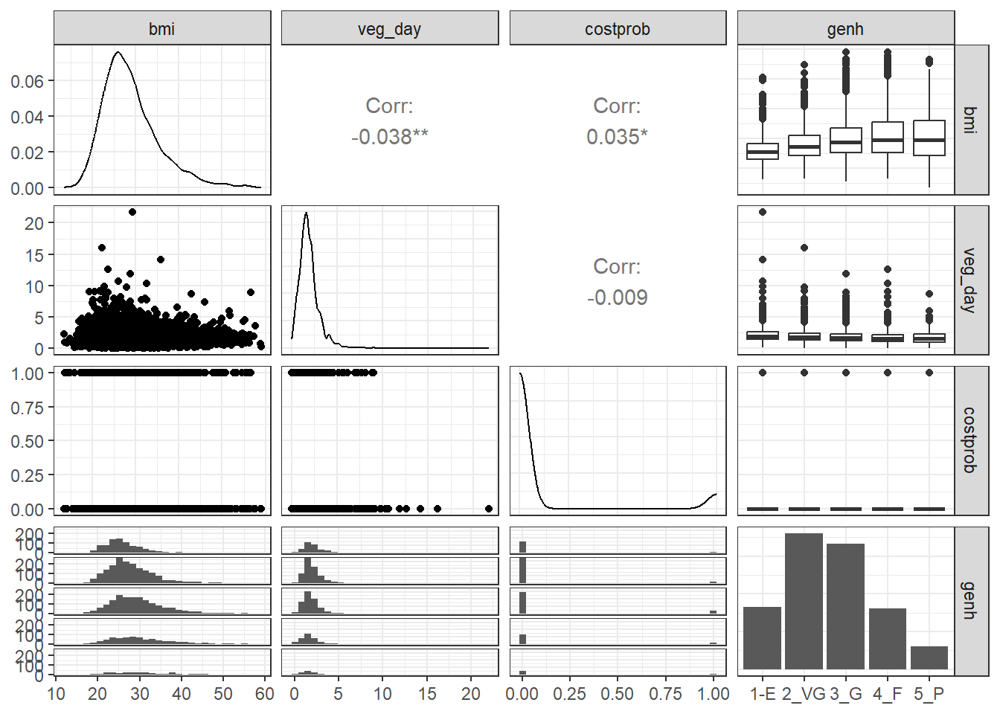
We might choose to plot the costprob data as a binary factor, rather than the raw 0-1 numbers included above, but not at this time.
27.9.2 Our Three-Predictor Model, m2
m2 <- polr(genh ~ veg_day + bmi + costprob, data = sm1)
summary(m2)
Re-fitting to get HessianCall:
polr(formula = genh ~ veg_day + bmi + costprob, data = sm1)
Coefficients:
Value Std. Error t value
veg_day -0.17130 0.021783 -7.864
bmi 0.06673 0.003855 17.311
costprob 0.96825 0.084871 11.409
Intercepts:
Value Std. Error t value
1-E|2_VG -0.1252 0.1229 -1.0183
2_VG|3_G 1.6358 0.1234 13.2572
3_G|4_F 3.1534 0.1294 24.3755
4_F|5_P 4.6881 0.1412 33.1928
Residual Deviance: 15229.24
AIC: 15243.24 This model contains four intercepts (to cover the five genh categories) and three slopes (one each for veg_day, bmi and costprob.)
27.9.3 Does the three-predictor model outperform m1?
anova(m1, m2)Likelihood ratio tests of ordinal regression models
Response: genh
Model Resid. df Resid. Dev Test Df LR stat. Pr(Chi)
1 veg_day 5389 15669.85
2 veg_day + bmi + costprob 5387 15229.24 1 vs 2 2 440.6041 0There is a statistically significant improvement in fit from model 1 to model 2. The AIC and BIC are also better for the three-predictor model than they were for the model with veg_day alone.
AIC(m1, m2) df AIC
m1 5 15679.85
m2 7 15243.24BIC(m1, m2) df BIC
m1 5 15712.81
m2 7 15289.4027.9.4 Wald tests for individual predictors
To obtain the appropriate Wald tests, we can use lrm to fit the model instead.
d <- datadist(sm1)
options(datadist = "d")
m2_lrm <- lrm(genh ~ veg_day + bmi + costprob,
data = sm1, x = T, y = T)
m2_lrmLogistic Regression Model
lrm(formula = genh ~ veg_day + bmi + costprob, data = sm1, x = T,
y = T)
Frequencies of Responses
1-E 2_VG 3_G 4_F 5_P
822 1805 1667 801 299
Model Likelihood Discrimination Rank Discrim.
Ratio Test Indexes Indexes
Obs 5394 LR chi2 515.65 R2 0.096 C 0.629
max |deriv| 4e-09 d.f. 3 R2(3,5394)0.091 Dxy 0.258
Pr(> chi2) <0.0001 R2(3,4995)0.098 gamma 0.258
Brier 0.231 tau-a 0.192
Coef S.E. Wald Z Pr(>|Z|)
y>=2_VG 0.1252 0.1229 1.02 0.3085
y>=3_G -1.6358 0.1234 -13.26 <0.0001
y>=4_F -3.1534 0.1294 -24.38 <0.0001
y>=5_P -4.6881 0.1412 -33.19 <0.0001
veg_day -0.1713 0.0218 -7.86 <0.0001
bmi 0.0667 0.0039 17.31 <0.0001
costprob 0.9683 0.0849 11.41 <0.0001 It appears that each of the added predictors (bmi and costprob) adds statistically detectable value to the model.
27.9.5 A Cross-Tabulation of Predictions?
addmargins(table(predict(m2), sm1$genh))
1-E 2_VG 3_G 4_F 5_P Sum
1-E 6 5 4 1 0 16
2_VG 686 1295 950 388 141 3460
3_G 128 495 672 374 135 1804
4_F 1 9 38 36 20 104
5_P 1 1 3 2 3 10
Sum 822 1805 1667 801 299 5394At least the m2 model predicted that a few of the cases will fall in the Fair and Poor categories, but still, this isn’t impressive.
27.9.6 Interpreting the Effect Sizes
We can do this in two ways:
- By exponentiating the
polroutput, which shows the effect of increasing each predictor by a single unit- Increasing
veg_dayby 1 serving while holding the other predictors constant is associated with reducing the odds (by a factor of 0.84 with 95% CI 0.81, 0.88)) of higher values ofgenh: hence increasingveg_dayis associated with increasing the odds of a response indicating better health. - Increasing
bmiby 1 kg/m2 while holding the other predictors constant is associated with increasing the odds (by a factor of 1.07 with 95% CI 1.06, 1.08)) of higher values ofgenh: hence increasingbmiis associated with reducing the odds of a response indicating better health. - Increasing
costprobfrom 0 to 1 while holding the other predictors constant is associated with an increase (by a factor of 2.63 with 95% CI 2.23, 3.11)) of a highergenhvalue. Since highergenhvalues indicate worse health, those withcostprob= 1 are modeled to have generally worse health.
- Increasing
exp(coef(m2)) veg_day bmi costprob
0.8425722 1.0690045 2.6333356 exp(confint(m2))Waiting for profiling to be done...
Re-fitting to get Hessian 2.5 % 97.5 %
veg_day 0.8071346 0.879096
bmi 1.0609722 1.077126
costprob 2.2301783 3.110633- Or by looking at the summary provided by
lrm, which like all such summaries produced byrmsshows the impact of moving from the 25th to the 75th percentile on all continuous predictors.
summary(m2_lrm) Effects Response : genh
Factor Low High Diff. Effect S.E. Lower 0.95 Upper 0.95
veg_day 1.21 2.360 1.1500 -0.19699 0.025051 -0.24609 -0.14789
Odds Ratio 1.21 2.360 1.1500 0.82120 NA 0.78185 0.86252
bmi 24.33 31.988 7.6575 0.51097 0.029515 0.45312 0.56882
Odds Ratio 24.33 31.988 7.6575 1.66690 NA 1.57320 1.76620
costprob 0.00 1.000 1.0000 0.96825 0.084871 0.80191 1.13460
Odds Ratio 0.00 1.000 1.0000 2.63330 NA 2.22980 3.10990 plot(summary(m2_lrm))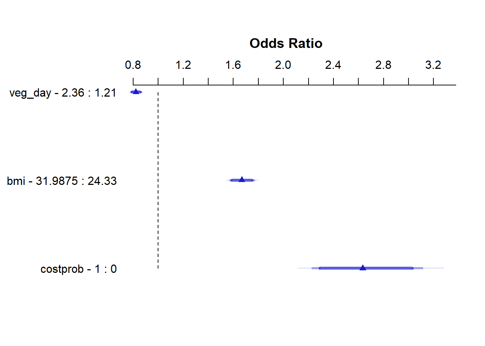
27.9.7 Quality of the Model Fit
Model m2, as we can see from the m2_lrm output, is still weak, with a Nagelkerke \(R^2\) of 0.10, and a C statistic of 0.63.
27.9.8 Validating the Summary Statistics in m2_lrm
set.seed(43203); validate(m2_lrm) index.orig training test optimism index.corrected n
Dxy 0.2583 0.2625 0.2579 0.0046 0.2537 40
R2 0.0964 0.0989 0.0960 0.0029 0.0935 40
Intercept 0.0000 0.0000 -0.0023 0.0023 -0.0023 40
Slope 1.0000 1.0000 0.9876 0.0124 0.9876 40
Emax 0.0000 0.0000 0.0031 0.0031 0.0031 40
D 0.0954 0.0980 0.0950 0.0030 0.0924 40
U -0.0004 -0.0004 -1.5149 1.5146 -1.5149 40
Q 0.0958 0.0984 1.6099 -1.5115 1.6073 40
B 0.2314 0.2308 0.2315 -0.0007 0.2321 40
g 0.6199 0.6278 0.6182 0.0096 0.6103 40
gp 0.1434 0.1448 0.1430 0.0018 0.1417 40As in our work with binary logistic regression, we can convert the index-corrected Dxy to an index-corrected C with C = 0.5 + (Dxy/2). Both the \(R^2\) and C statistics are pretty consistent with what we saw above.
27.9.9 Testing the Proportional Odds Assumption
Again, we’ll fit the analogous multinomial logit model, with the multinom function from the nnet package.
(m2_multi <- multinom(genh ~ veg_day + bmi + costprob,
data = sm1))# weights: 25 (16 variable)
initial value 8681.308100
iter 10 value 8025.745934
iter 20 value 7605.878993
final value 7595.767250
convergedCall:
multinom(formula = genh ~ veg_day + bmi + costprob, data = sm1)
Coefficients:
(Intercept) veg_day bmi costprob
2_VG -0.9126285 -0.0905958 0.06947231 0.3258568
3_G -2.1886806 -0.1893454 0.11552563 1.0488262
4_F -3.4095145 -0.3056028 0.13679908 1.4422074
5_P -4.2629564 -0.3384199 0.13178846 1.8612088
Residual Deviance: 15191.53
AIC: 15223.53 The multinomial logit fits four intercepts and 12 slopes, for a total of 16 estimated parameters. The proportional odds logit in model m2, as we’ve seen, fits four intercepts and three slopes, for a total of 7. The difference is 9, and we use that number in the sequence below to build our test of the proportional odds assumption.
LL_2 <- logLik(m2)
LL_2m <- logLik(m2_multi)
(G <- -2 * (LL_2[1] - LL_2m[1]))[1] 37.70952pchisq(G, 9, lower.tail = FALSE)[1] 1.965186e-05The result is highly significant, suggesting that we have a problem somewhere with the proportional odds assumption. When this happens, I suggest you build the following plot of score residuals:
par(mfrow = c(2,2))
resid(m2_lrm, 'score.binary', pl=TRUE)
par(mfrow= c(1,1))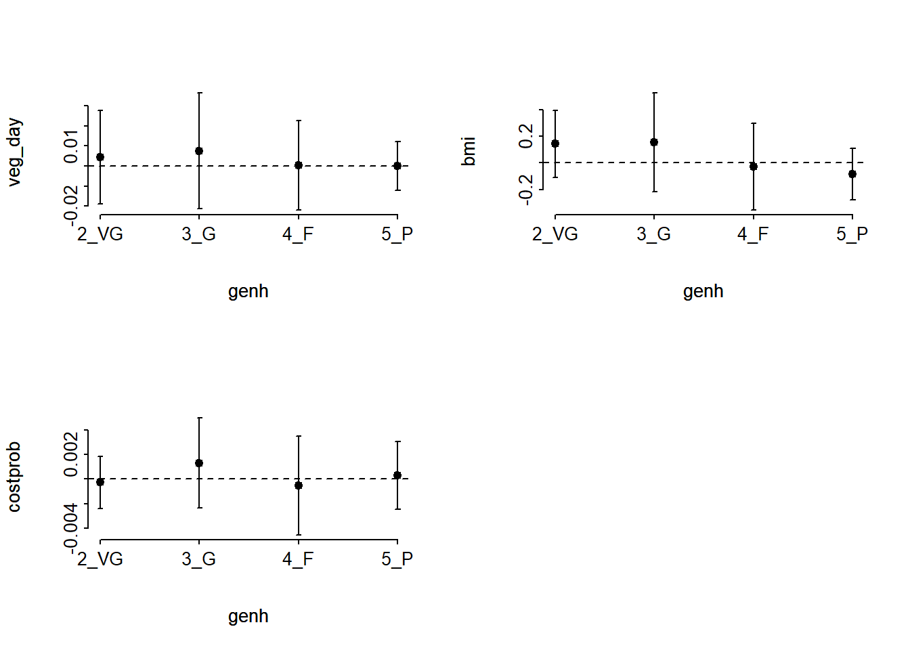
From this plot, bmi (especially) and costprob vary as we move from the Very Good toward the Poor cutpoints, relative to veg_day, which is more stable.
27.9.10 Plotting the Fitted Model
27.9.10.1 Nomogram
fun.ge3 <- function(x) plogis(x - m2_lrm$coef[1] + m2_lrm$coef[2])
fun.ge4 <- function(x) plogis(x - m2_lrm$coef[1] + m2_lrm$coef[3])
fun.ge5 <- function(x) plogis(x - m2_lrm$coef[1] + m2_lrm$coef[4])
plot(nomogram(m2_lrm, fun=list('Prob Y >= 2 (VG or worse)' = plogis,
'Prob Y >= 3 (Good or worse)' = fun.ge3,
'Prob Y >= 4 (Fair or Poor)' = fun.ge4,
'Prob Y = 5 (Poor)' = fun.ge5)))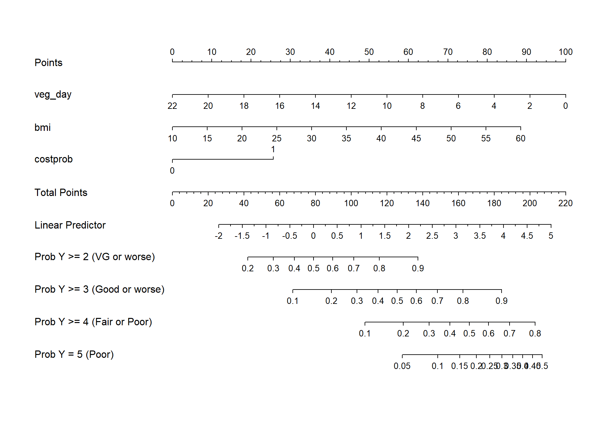
27.9.10.2 Using Predict and showing mean prediction on 1-5 scale
ggplot(Predict(m2_lrm, fun = Mean(m2_lrm, code = TRUE)))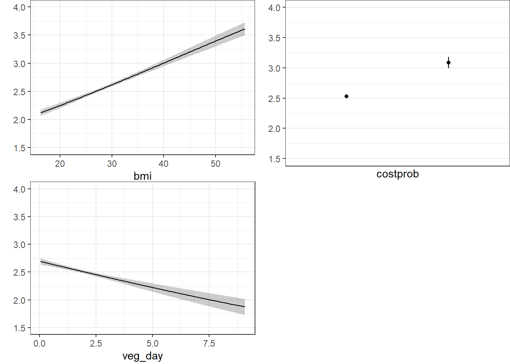
The nomogram and Predict results would be more interesting, of course, if we included a spline or interaction term. Let’s do that in model m3_lrm, and also add the incomegroup information.
27.10 A Larger Model, including income group
m3_lrm <- lrm(gen_n ~ rcs(veg_day,3) + rcs(bmi, 4) +
incomegroup + catg(costprob) +
bmi %ia% costprob,
data = sm1, x = T, y = T)
m3_lrmLogistic Regression Model
lrm(formula = gen_n ~ rcs(veg_day, 3) + rcs(bmi, 4) + incomegroup +
catg(costprob) + bmi %ia% costprob, data = sm1, x = T, y = T)
Frequencies of Responses
1 2 3 4 5
822 1805 1667 801 299
Model Likelihood Discrimination Rank Discrim.
Ratio Test Indexes Indexes
Obs 5394 LR chi2 1190.35 R2 0.209 C 0.696
max |deriv| 1e-11 d.f. 14 R2(14,5394)0.196 Dxy 0.391
Pr(> chi2) <0.0001 R2(14,4995)0.210 gamma 0.392
Brier 0.214 tau-a 0.291
Coef S.E. Wald Z Pr(>|Z|)
y>=2 3.7535 0.4852 7.74 <0.0001
y>=3 1.8717 0.4838 3.87 0.0001
y>=4 0.2035 0.4831 0.42 0.6737
y>=5 -1.4386 0.4846 -2.97 0.0030
veg_day -0.2602 0.0633 -4.11 <0.0001
veg_day' 0.1756 0.0693 2.53 0.0113
bmi -0.0325 0.0203 -1.60 0.1086
bmi' 0.5422 0.0989 5.48 <0.0001
bmi'' -1.4579 0.2663 -5.47 <0.0001
incomegroup=10-14K 0.2445 0.1705 1.43 0.1516
incomegroup=15-19K -0.2626 0.1582 -1.66 0.0969
incomegroup=20-24K -0.6434 0.1501 -4.29 <0.0001
incomegroup=25-34K -0.7427 0.1459 -5.09 <0.0001
incomegroup=35-49K -1.1621 0.1415 -8.21 <0.0001
incomegroup=50-74K -1.4579 0.1418 -10.28 <0.0001
incomegroup=75K+ -1.8592 0.1361 -13.66 <0.0001
costprob=1 1.4576 0.3528 4.13 <0.0001
bmi * costprob -0.0259 0.0116 -2.24 0.0250 Another option here would have been to consider building incomegroup as a scored variable, with an order on its own, but I won’t force that here. Here’s the polr version…
m3 <- polr(genh ~ rcs(veg_day,3) + rcs(bmi, 4) +
incomegroup + costprob +
bmi %ia% costprob, data = sm1)27.10.1 Cross-Tabulation of Predicted/Observed Classifications
addmargins(table(predict(m3), sm1$genh))
1-E 2_VG 3_G 4_F 5_P Sum
1-E 3 2 0 0 0 5
2_VG 642 1200 815 221 49 2927
3_G 170 565 754 468 182 2139
4_F 7 37 96 108 65 313
5_P 0 1 2 4 3 10
Sum 822 1805 1667 801 299 5394This model predicts more Fair results, but still far too many Very Good with no Excellent at all.
27.10.2 Nomogram
fun.ge3 <- function(x) plogis(x - m3_lrm$coef[1] + m3_lrm$coef[2])
fun.ge4 <- function(x) plogis(x - m3_lrm$coef[1] + m3_lrm$coef[3])
fun.ge5 <- function(x) plogis(x - m3_lrm$coef[1] + m3_lrm$coef[4])
plot(nomogram(m3_lrm, fun=list('Prob Y >= 2 (VG or worse)' = plogis,
'Prob Y >= 3 (Good or worse)' = fun.ge3,
'Prob Y >= 4 (Fair or Poor)' = fun.ge4,
'Prob Y = 5 (Poor)' = fun.ge5)))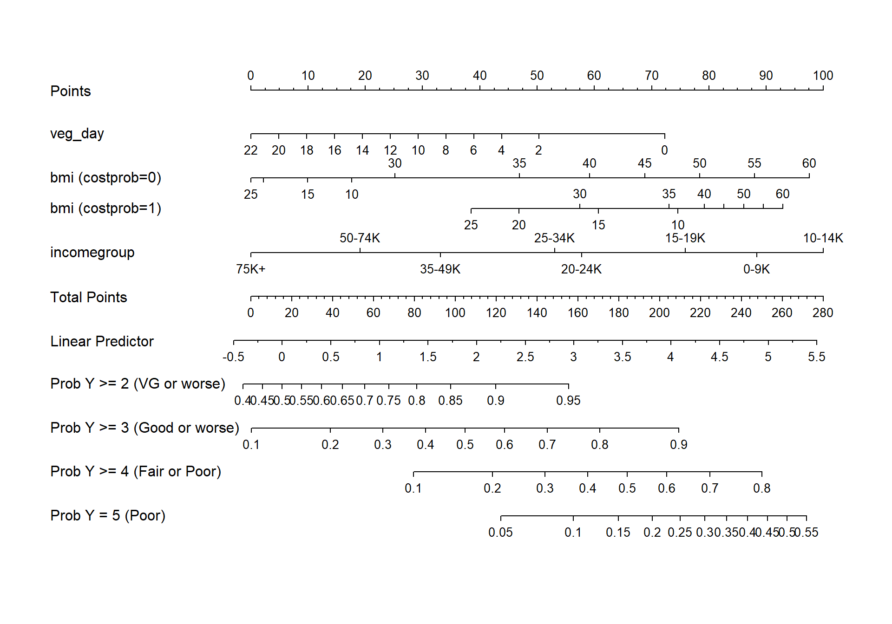
27.10.3 Using Predict and showing mean prediction on 1-5 scale
ggplot(Predict(m3_lrm, fun = Mean(m3_lrm, code = TRUE)))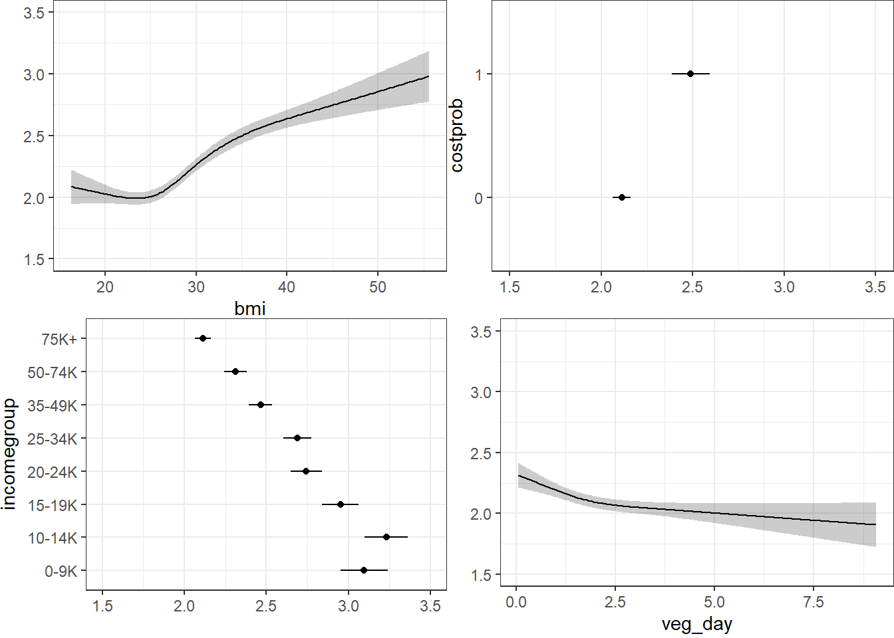
Here, we’re plotting the mean score on the 1-5 gen_n scale.
27.10.4 Validating the Summary Statistics in m3_lrm
set.seed(43221); validate(m3_lrm) index.orig training test optimism index.corrected n
Dxy 0.3915 0.3928 0.3899 0.0029 0.3886 40
R2 0.2093 0.2112 0.2071 0.0041 0.2053 40
Intercept 0.0000 0.0000 0.0019 -0.0019 0.0019 40
Slope 1.0000 1.0000 0.9871 0.0129 0.9871 40
Emax 0.0000 0.0000 0.0032 0.0032 0.0032 40
D 0.2205 0.2227 0.2179 0.0049 0.2156 40
U -0.0004 -0.0004 -1.4667 1.4663 -1.4667 40
Q 0.2209 0.2231 1.6845 -1.4614 1.6823 40
B 0.2137 0.2134 0.2142 -0.0007 0.2145 40
g 1.0363 1.0410 1.0276 0.0133 1.0229 40
gp 0.2262 0.2265 0.2244 0.0022 0.2240 40Still not very impressive, but much better than where we started. It’s not crazy to suggest that in new data, we might expect a Nagelkerke \(R^2\) of 0.205 and a C statistic of 0.5 + (0.3886/2) = 0.6943.
27.11 References for this Chapter
Some of the material here is adapted from http://stats.idre.ucla.edu/r/dae/ordinal-logistic-regression/.
I also found great guidance at http://data.library.virginia.edu/fitting-and-interpreting-a-proportional-odds-model/
Other parts are based on the work of Jeffrey S. Simonoff (2003) Analyzing Categorical Data in Chapter 10. Related data and R code are available at http://people.stern.nyu.edu/jsimonof/AnalCatData/Splus/.
Another good source for a simple example is https://onlinecourses.science.psu.edu/stat504/node/177.
Also helpful is https://onlinecourses.science.psu.edu/stat504/node/178 which shows a more complex example nicely.